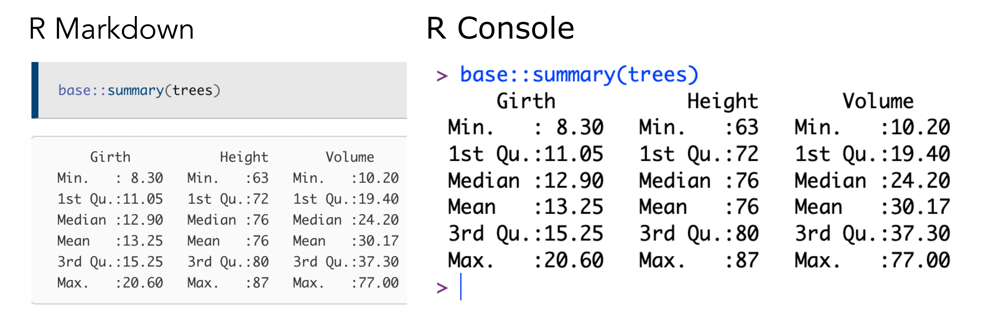
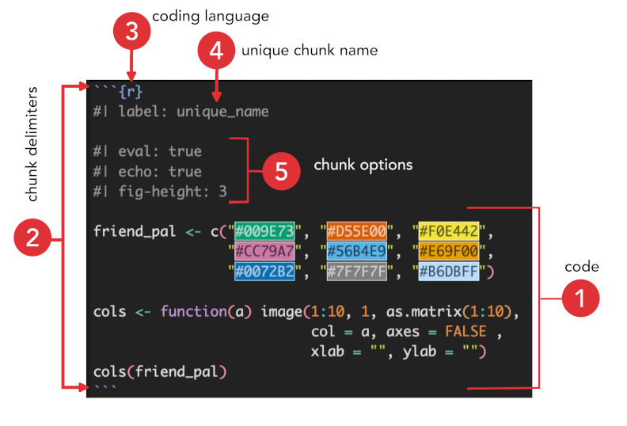
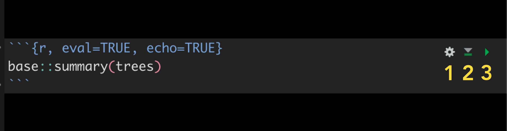

If you have experience using R, you know there are different ways to process code. You can run commands interactively in the R console or use batch processing to run scripts. You can send results to files (like figures or tables), print results to the screen, or save the results as object in the R environment.
Estimated reading time: 10 minute(s).
Processing code in a R Markdown document is very similar in principle. When you incorporate code in your R Markdown document and render that document, knitr first executes all of the code. However, in order to do this, knitr needs to know which text in the document is code. To differentiate code from normal text, we can either use code chunks or inline code. Think of code chunks and inline code as mini R environments. knitr essentially pulls the code out, runs the code, and then puts the results in a new document as Markdown-formatted text.
Let me show you what I mean. The image on the left is a screenshot from a HTML page that was built from a R Markdown document. The R Markdown document contained a line of R code, in this case base::summary(trees), that was executed by knitr during the rendering process. Below the command you can see the output. I did not code the results into the document, rather knitr did when it ran the command.
On the right is a screenshot of my R console. I just copied the command and ran it in regular old R. I hope you can see that aside for some formatting differences, these results are identical. This is because knitr is running the code in R and encoding the results in Markdown, itself translated to HTML by PanDoc. Ninety-five percent of the time, all you need to do is paste your R code into a code chunk and it will be processed like this. Of course, nothing is absolute, and we will encounter some exceptions.
Executing the same command in a R Markdown document (left) and the R console (right).
Learning Objectives
In this lesson, you will learn how to use code chunks to analyze and display data in your R Markdown document. You will learn the structure of code chunks and how to control and customize their behavior using chunk options. You will also learn how to write and use inline code to display results within the body of your document.
You do not need to be an R expert to go through this module, but some understanding of R is very helpful. If you are interested in learning how to code in R, I suggest investing some time exploring this amazing tool. There are hundreds of tutorials and courses online, many of which are free. For example, Bill Petti offers a nice Crash Course in R that covers many of the basics.
In this lesson, we will use some built-in data sets to demonstrate how code is integrated into R Markdown documents. R comes with many built-in dummy data sets (from the datasets package), which are super useful when you are trying to test code, demonstrate a function, create a minimal, reproducible example, and so on. This is because anyone following along has access to the exact same data in the exact same format.
To see a list of the built-in data sets, simply type data() in your R or RStudio console.
Code Chunks
The most common way of adding code to your document is with code chunks. Chunks are particularly useful if you have multiple lines of code you want to run like functions, for loops, and so on—basically any code that cannot be written in a concise manner and/or code that you want to display in the final document. In contrast, inline code (covered below) is used when you have a small bit of code that you want executed and then show the results (but not the code itself) within say a sentence or paragraph. More on that soon.
Code chunk anatomy
Great. Let me begin by first explaining the structure of a code chunk. Below is an annotated screenshot of a piece of code I wrote to define a simple, accessible color palette. For the moment you can ignore what this code does, rather make sure you understand how the chunk is structured. There are five main components of a code chunk: 1) the code itself, 2) code delimiters, 3) the coding language, 4) the chunk name, and 5) the chunk options.

1. The code
If you want to execute and render code in your document, the first thing you need of course is code. If I just write the code above in my document and run knitr, the code in the rendered document would look something like this:
friend_pal <- c(“#009E73”, “#D55E00”, “#F0E442”, “#CC79A7”, “#56B4E9”, “#E69F00”, “#0072B2”, “#7F7F7F”, “#B6DBFF”)
cols <- function(a) image(1:9, 1, as.matrix(1:9), col = a, axes = FALSE, xlab = ““, ylab =”“) cols(friend_pal)
Notice that there is no formatting and nothing is executed. This is because knitr does not know the text above is code—it simply reads it as text and renders it accordingly. If we want more than this we need to include additional information.
2. Delimiters
Code in R Markdown is distinguished from the rest of the text with delimiters. Often called a code fence, delimiters partition your code from the rest of the text. Code chunks in R markdown are delimited by three back ticks (```), which open and close the chunk. If we wrap the text above in back ticks then the final output is formatted like so:
```{r}
friend_pal <- c("#009E73", "#D55E00", "#F0E442",
"#CC79A7", "#56B4E9", "#E69F00",
"#0072B2", "#7F7F7F", "#B6DBFF")
cols <- function(a) image(1:10, 1, as.matrix(1:10),
col = a, axes = FALSE , xlab = "", ylab = "")
cols(friend_pal)
```Now we have formatted code. Neat. Even though knitr recognizes this as code (of some kind), it has no idea what language the code is written in and thus will not evaluate and execute the chunk—it simply takes the code between the delimiters and turns into Markdown-formatted code text. This can actually be useful if you want to call out a block of code without running anything. But if you want knitr to actually do something with this code, you need to provide more information.
Any additional code chunk details must be enclosed in curly brackets (
{ }).
Let me say that again. Any additional code chunk details must be enclosed in curly brackets ({ }). Failure to do so will break your document and make you very frustrated. Everything described below needs to be enclosed in curly brackets.
3. Coding Language
To evaluate code, the minimum information you need to provide is the name of a language. R Markdown supports many languages like Python, BASH, and of course R. For example, I can call BASH and run a simple command just like I would do in a terminal. Here I use the ls command to list all the files in a directory and add the flags l to get a long listing for every file, a to include any hidden files, and h to return file sizes in human readable format.
Pretty please pay attention to the structure of the chunk.
- Three back ticks ( ``` ),
- followed by open curly bracket ( { ),
- the language name (bash),
- closed curly bracket ( } ),
- <return>,
- the command you want to run,
- <return> again,
- and finally three back ticks ( ``` ).
If you fail to follow this format, RStudio will not be very nice.
```{bash}
ls -lah
```total 112
drwxr-xr-x@ 6 rad staff 192B Jan 17 09:19 .
drwxr-xr-x@ 9 rad staff 288B Jan 17 08:36 ..
-rw-r--r--@ 1 rad staff 6.0K Sep 16 09:17 .DS_Store
drwxr-xr-x@ 8 rad staff 256B Sep 15 16:11 files
-rw-r--r--@ 1 rad staff 20K Jan 10 23:22 index.qmd
-rw-r--r--@ 1 rad staff 20K Jan 17 09:19 index.rmarkdownBy specifying a language, knitr was able to interpret the code and run the commands. And as you can see, I get a printout of the results right in the final document. Though we will mainly use the r language option you may want to explore the functionality of other languages in your own work. OK, back to R.
Also make certain that there are line breaks before and after code chunks.
Suppose I want to generate some quick summary statistics for one of the built-in data sets using the base::summary() function. In my R Markdown document I would code the chunk like so.
```{r}
base::summary(trees)
```This command simply calls the summary function (from the base package) and runs the it using the trees data set. When I build my document, the code chunk renders like this followed by the output of the command:
base::summary(trees) Girth Height Volume
Min. : 8.30 Min. :63 Min. :10.20
1st Qu.:11.05 1st Qu.:72 1st Qu.:19.40
Median :12.90 Median :76 Median :24.20
Mean :13.25 Mean :76 Mean :30.17
3rd Qu.:15.25 3rd Qu.:80 3rd Qu.:37.30
Max. :20.60 Max. :87 Max. :77.00 The main thing to notice about the rendered code chunk is that there are no chunk delimiters or any information about the chunk, just the formatted command base::summary(trees) with the formatted results printed below.
4. Chunk name
Adding a chuck name is optional but my advice is to always add a name. The main reason is that it is easier to track down problems if each chunk has a name—especially in large documents or websites. Keep the name simple. If you follow the same rules I described in the post on naming things, you should be OK. Bad chunk names can cause errors when a document is rendered.
The name must be unique, it needs to come right after the language variable, and it must be separated by a space. Failure to follow these rules will result in errors.
If you look at any of my code you will notice that I do not use chunk names. I don’t add chunk names for one simple reason, I’m lazy This is one of those cases where you should probably not follow my example.
5. Chunk Options
The last piece of this puzzle are the chunk options. Options are listed after the language and the name and must be separated by a comma (,). Chunk options are how you fine-tune the way knitr processes and renders your code. There are something like 50 chunk options, and it can get a little confusing to figure out what each one does and when to use them. I only want to cover the most common options here and will leave the rest up to you. You can familiarize yourself with the chunk options by checking out the relevant sections from the R Markdown Cookbook, R Markdown: The Definitive Guide, and the knitr guide.
If you remember back when you created your first Distill site, R Markdown populated the index.Rmd and about.Rmd each with a code chunk that looked like this:
There are a few things to unpack here. First, the language of the chunk is r, the name is setup, and the option is include=FALSE. With include=FALSE, the code chunk is evaluated but the code and any output will be completely suppressed.
Second, the command that is called within the chunk uses the opts_chunk$set function from the knitr package to set a global chunk option for the entire document, in this case echo = FALSE. The echo option controls whether code chunks are visible in the rendered document. Setting the global command echo = FALSE means that all chunks in the rendered document will be hidden by default. The only way to escape this behavior is to either change the global option to echo = TRUE or set echo = TRUE for individual code chunks.
For example, let’s return to our toy example where we summarize the trees data set. If we leave the global option as is, the code chunk will be evaluated but not rendered in the final document. However, if we want to see the code in that chunk we must set echo=TRUE, like so.
```{r}
#| label: summary1
base::summary(trees)
```And the rendered code will look like this.
base::summary(trees) Girth Height Volume
Min. : 8.30 Min. :63 Min. :10.20
1st Qu.:11.05 1st Qu.:72 1st Qu.:19.40
Median :12.90 Median :76 Median :24.20
Mean :13.25 Mean :76 Mean :30.17
3rd Qu.:15.25 3rd Qu.:80 3rd Qu.:37.30
Max. :20.60 Max. :87 Max. :77.00 What about if we want to see the code but do not want it evaluated (executed). In that case we need to add the option eval=FALSE, like so
```{r}
#| label: summary3
#| eval: false
base::summary(trees)
```Here we see the code but no output is included. In other words, the code was not run because we set eval=FALSE.
base::summary(trees)Assignment
As we move through the course we will explore additional chunk options, especially when we cover figures and tables, which have their own settings. For now, play around with include, eval, and echo in your documents. Use dummy data if you want.
Inline R Code
The last thing I want to show you for this lesson is inline R code. Chunks are great when you have a lot of commands to run and/or you want to control the output. Inline code lets you add the output of a command anywhere in a document. Let’s return to our old friend, the trees data set for a demonstration of this functionality.
I know from looking at the trees help page that the data set is a data frame with 31 observations on 3 variables (Girth, Height, and Volume). Now pretend I do not know what the actual data frame looks like, but I am interested to report the dimensions of the data set and determine the maximum and minimum values of each variable.
I can write a sentence like this in my R Markdown document using inline R code to extract the information without ever looking at the data set:
The trees data frame has `r nrow(trees)` observations on `r length(trees)` variables. The maximum girth is `r max(trees$Girth)` and the minimum height is `r min(trees$Height)`.
What I did here was create inline, mini code chunks by enclosing each command in single back ticks, adding the r language qualifier, followed by the command. R Markdown will always display the results of inline code, but never the code itself. You cannot use knitr chunk options with inline expressions and inline output is indistinguishable from the surrounding text. Here is what the passage looks like when it is rendered in the final document.
The
treesdata frame has 31 observations on 3 variables. The maximum distance is 20.6 and the minimum speed is 63.
You can even use inline code for quick calculations and render the results right in the text. For example, the square root of \(\pi\) is `r sqrt(pi)` renders as The square root of \(\pi\) is 1.7724539. Running inline r code is super handy.
Assignment
Add inline R code to your document.
Testing Code
It is a really good habit to test code chunks as you add them. This will ensure that each chunk works, making it easier to track down problems should any arise. If you refer to the first image on this page, you can you have options for Chunk Output—Inline and Console. This controls where the output is displayed. Let’s take a quick look at a code chunk in RStudio and see how you test chunks before rendering.
Take a look at the tool bar on the far right of the chunk.
Option 1 Modify Chunk Options , is a drop down menu that gives you an alternative way to set code chunk options.
Option 2 will Run all Code Chunks Above meaning that RStudio will run all code chunks above the current chunk but not run the current chunk itself.
Option 3 will Run the Current Chunk. Incidentally, if you do not see these options it means something is wrong with the chunk formatting.
Look for the Run drop down menu in the upper right hand corner of your editor window. There you can find several more options for running chunks without rendering the document.

Concluding Remarks
As you may have noticed, chunk details are hidden in rendered documents. Chunk details are instructions for knitr on how chunks should be rendered. This information is not important for reproducibility or transparency, so it is hidden. Anytime you do see code chunk information on a page, it is because that chunk is intentionally being rendered verbatim. Normally I do this for demonstration purposes only. When I show code chunk information, it is as a learning tool only. Otherwise these details are hidden and you will have to dig around the source code on GitHub to find them :). The same goes for inline code.
Please spend some time learning this material and asking questions. I promise, the more you take away from this lesson, the less likely you will be to throw your computer off a bridge. This is your chance to get your hands dirty writing and testing code.
Source Code
The source code for this page can be accessed on GitHub by clicking this link.